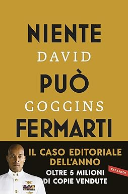

Self-discipline is the ability to keep going, stay motivated, and take action regardless of how you feel, both physically and emotionally. It shows every time you intentionally choose to pursue something better for yourself, despite distractions, hard work, or unfavorable odds. Self-discipline differs from self-motivation or willpower: these, along with perseverance, are actually the cognitive foundations needed to develop the ability to be self-disciplined.
Self-discipline is a key element that distinguishes successful people from those who struggle to achieve their goals. There are individuals who seem to belong to a "superior species": due to their physical fitness, energy, the amount of activity they accomplish in a single day, and their mental clarity and brilliance. These qualities enable them to work harder and better, even on their personal goals and passions.
Self-discipline, unlike discipline itself, is a deeper and more autonomous form of control. It comes from within the individual and is motivated by personal goals, values, or beliefs. A self-disciplined person acts consistently and responsibly even in the absence of external pressure. For example, a self-disciplined individual might choose to wake up early every morning to study, without anyone forcing them to do so.
The main difference, therefore, is that discipline is often reactive and imposed, whereas self-discipline is proactive and chosen. The latter is one of the most important qualities for achieving long-term goals because it allows one to stay committed even when motivation fades. In conclusion, discipline is a good starting point for education, but it is self-discipline that leads to true personal growth and lasting success.
The best investment you can make to unlock unstoppable self-discipline is to buy DAVID GOGGINS' book. Courage—will you be able to believe the feats of the toughest man in the world? Click on the image to find out!
